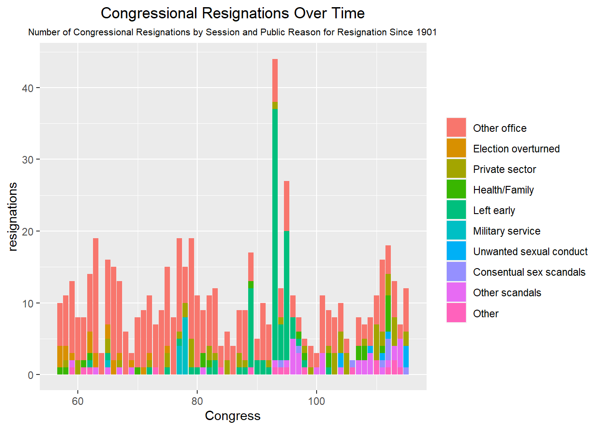
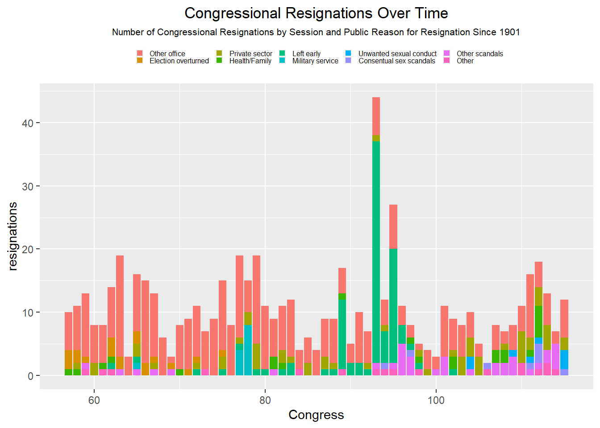
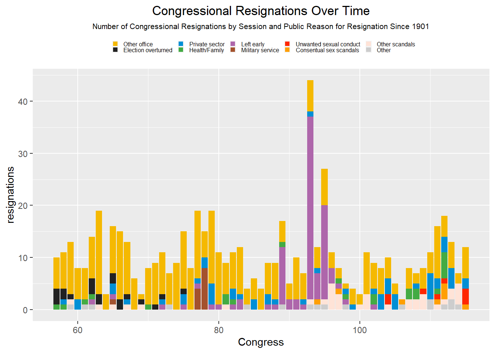
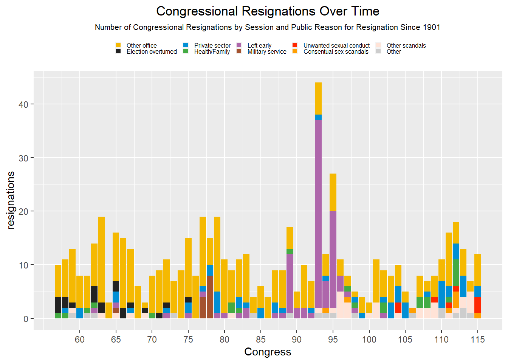
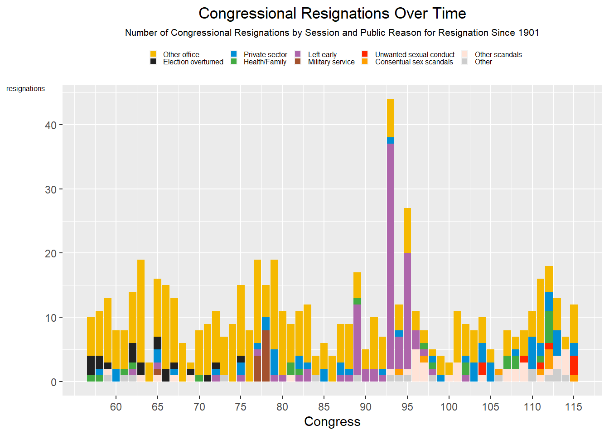
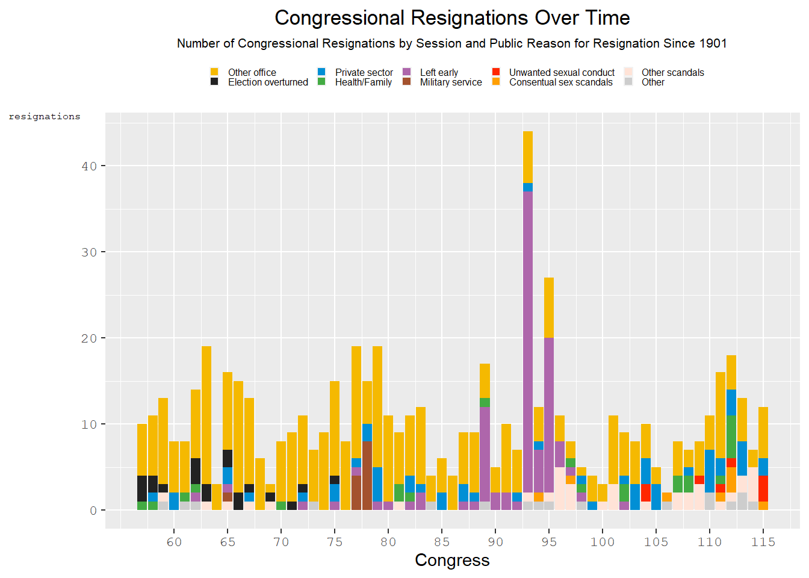
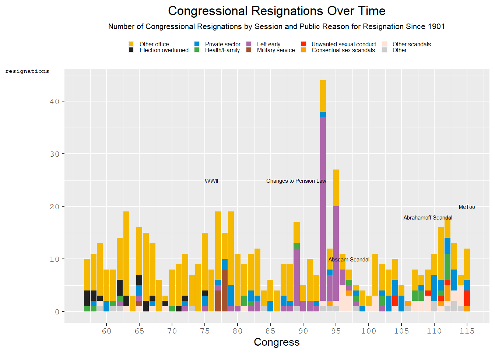

#Welcome to my visualization exercise! Below is my attepmt at recreating a plot from FiveThirtyEight. My starting data was only their .csv file that they iused for the plot on their site describing Congressional resignations over time. The firgure itself was made using RStudio packages…. and some sweat and tears. See below for the original figure.
#Here is where I start my figure production.
#Load important packages:
library(tidyverse)## -- Attaching packages --------------------------------------- tidyverse 1.3.1 --## v ggplot2 3.3.5 v purrr 0.3.4
## v tibble 3.1.3 v dplyr 1.0.7
## v tidyr 1.1.3 v stringr 1.4.0
## v readr 2.0.1 v forcats 0.5.1## -- Conflicts ------------------------------------------ tidyverse_conflicts() --
## x dplyr::filter() masks stats::filter()
## x dplyr::lag() masks stats::lag()library(readxl)
library(dplyr)
library(here)## here() starts at C:/Data/Github/MADA/CARTERCOLEMAN-MADA-portfoliolibrary(knitr)#Set up a custom color pallete for later use.
Five_Thirty_Eight <- c("Other office" = "#F5B901", "Election overturned" = "#222222", "Private sector" = "#018FD5", "Health/Family" = "#43AB43", "Left early" = "#AE66AB", "Military service" = "#A4522E", "Unwanted sexual conduct" = "#FF2700", "Consentual sex scandals" = "#FF9F02", "Other scandals" = "#FFE3D7", "Other" = "#CDCDCD")#upload data set.
data_location <- here::here("data","Module5_data","congress-resignations","congressional_resignations.xlsx")
rawdata <- readxl::read_excel(data_location)#Select variables “Congress” and “Category”.
CongressRes1 <- rawdata %>%
select("Congress", "Category")#Split values of 2 or more categories using string split.
Test <- separate(CongressRes1, "Category", paste(1:2, sep = "&"))## Warning: Expected 2 pieces. Missing pieces filled with `NA` in 598 rows [1, 2,
## 3, 4, 5, 6, 7, 8, 9, 10, 11, 12, 13, 14, 15, 16, 17, 18, 19, 21, ...].Stack <- Test %>%
pivot_longer(cols = c(-Congress), names_to = "Temp", values_to = "Category")
Stack$value <- 1 #Add varibable that assigns a value of 1 to each letter.
Stack <- Stack[!is.na(Stack$Category), ]#Create new Category row.
Stack <- Stack %>%
mutate(Category = case_when(
Category == "C" ~ "Other office",
Category == "I" ~ "Election overturned",
Category == "D" ~ "Private sector",
Category == "E" ~ "Health/Family",
Category == "G" ~ "Left early",
Category == "H" ~ "Military service",
Category == "X" ~ "Unwanted sexual conduct",
Category == "A" ~ "Consentual sex scandals",
Category == "B" ~ "Other scandals",
Category == "F" ~ "Other",
))#Make “Congress” variable numeric by removing “th”, “st”, “rd” and “nd”.
Stack$Congress <-
gsub("th","",as.character(Stack$Congress))
Stack$Congress <-
gsub("nd","",as.character(Stack$Congress))
Stack$Congress <-
gsub("rd","",as.character(Stack$Congress))
Stack$Congress <-
gsub("st","",as.character(Stack$Congress))#Reorder legend labels. This will make sure the colors match on the final product. However, the oonly issue I have is that ggplot is plotting the data in the reverse order. If you look closely, you can see the stack bars are in the right order, but just flipped.
Stack$Category <- factor(Stack$Category, levels = c("Other office", "Election overturned", "Private sector", "Health/Family", "Left early", "Military service", "Unwanted sexual conduct", "Consentual sex scandals", "Other scandals", "Other"))#Plot graph
Congress_resignation_Plot <- Stack %>%
mutate(Congress = as.numeric(Congress)) %>%
ggplot(aes(x = Congress, y = value, fill = Category)) +
geom_col() + ggtitle("Congressional Resignations Over Time", "Number of Congressional Resignations by Session and Public Reason for Resignation Since 1901") + theme(
plot.title = element_text(hjust = .5), plot.subtitle = element_text(hjust = .5, size = 8)) + #center plot title
xlab("Congress") + ylab("resignations") +
guides(fill = guide_legend(title = NULL)) #gets rid of legend title#View plot
print(Congress_resignation_Plot) #Right now, the figure ia a mess. The main objective in editing this image it to space out all the text and get the colors to match the legend symbols from the original plot. Additionally, with will alter the font type.
##Editing the Image.
#Changing the legend aesthetics.
Congress_resignation_Plot <- Congress_resignation_Plot +
theme(
legend.text = element_text(size = unit(6, 'pt')),
legend.position = "top",
legend.key.size = unit(6, 'pt'))
print(Congress_resignation_Plot) #Changing the Legend Colors.
Congress_resignation_Plot <-
Congress_resignation_Plot + scale_fill_manual(values = Five_Thirty_Eight)
print(Congress_resignation_Plot)
#Adding more tick marks to the x-axis.
Congress_resignation_Plot <- Congress_resignation_Plot + scale_x_continuous(
breaks = c(60, 65, 70, 75, 80, 85, 90, 95, 100, 105, 110, 115)
)
print(Congress_resignation_Plot)
#Changing y-axis asthetics.
Congress_resignation_Plot <- Congress_resignation_Plot +
theme(axis.title.y = element_text(margin = margin(r = 0), size = unit(6, 'pt'))) +
theme(axis.title.y = element_text(angle = 0)) +
theme(axis.title.y = element_text(vjust = 1))
print(Congress_resignation_Plot)
#Change font type for the axes
Congress_resignation_Plot <- Congress_resignation_Plot +
theme(
axis.text.x = element_text(family = "mono"),
axis.text.y = element_text(family = "mono"),
axis.title.y = element_text(family = "mono")
)
print(Congress_resignation_Plot) #Annotate the graph to show signicicant temporal factors that caused resignations. This last change will produce the Final Product.
labels = as.data.frame(label = c("WWII", "Changes to Pension Law", "Abscam Scandal", "Abrahamoff Scandal", "MeToo"), x = c(76, 89, 97, 109, 115), y = c(25, 25, 18, 18, 20))
Congress_resignation_Plot <-
Congress_resignation_Plot +
annotate("text", x = c(76, 89, 97, 109, 115), y = c(25, 25, 10, 18, 20), label = c("WWII", "Changes to Pension Law", "Abscam Scandal", "Abrahamoff Scandal", "MeToo"), size = 2)
print(Congress_resignation_Plot)
#Besides the inverted color scheme, the only blaring difference is that I cannot figure out how to add arrows from my labels to the bars themselves. The main issue is that I don’t know how to insert images within an image. Feel free to contact me if you how to make that work!
#Save Image
figure_file = here("data","Module5_data","congress-resignations","Congressional_Resignations.png")
ggsave(filename = figure_file, plot = Congress_resignation_Plot)## Saving 7 x 5 in image{kind=link}